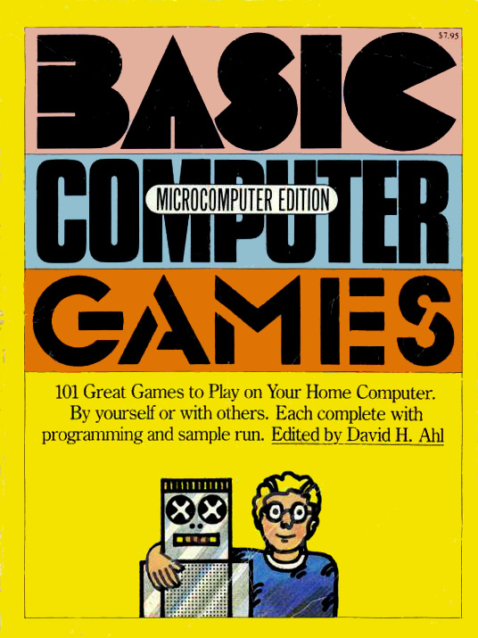

Beautiful Racket / tutorials
Go with the flow: basic
- 1 intro
- 2 specification and setup
- 3 the lexer
- 4 the tokenizer
- 5 the parser
- 6 the reader
- 7 the expander
- 8 testing the language
- 9 recap
- 10 source listing
Now that we’ve covered the fundamentals, let’s try a more challenging project.
As languages, though bf and jsonic were fun to write, they weren’t much fun to program with. This time, we’ll implement a version of the original fun language: BASIC, whose most famous features are its line numbers and goto statement:
10 print "HELLO WORLD!"
20 goto 10
1 2 3 | #lang basic-demo 10 print "HELLO WORLD!" 20 goto 10 |

Yes, we can run this program in DrRacket. (No prizes for guessing what happens.)
To be fair, not everyone agrees on the “fun” part. BASIC was invented by John Kemeny in 1964. It was designed to be easy to learn (a worthy goal, considering that it was competing against FORTRAN and ALGOL). To that end, BASIC was successful.
Of course, some dissented. For instance, in 1968, Edsger Dijkstra published “Go To Statement Considered Harmful” and later said that programmers who started out with BASIC were “mentally mutilated beyond hope of regeneration.”
If Dijkstra is right, then every programmer born before 1975 is a mutilation victim. In the ’70s and ’80s, home computers were becoming common—from the so-called Trash-80, to the posh Apple II, to the popular Commodore 64. These machines didn’t have much in common except that they all ran some version of BASIC. Thus, every family that had a computer, and a nerdy child older than 8, had someone in the house writing BASIC programs.
 Most likely, the programs being written were games. Any respectable young nerd had both volumes of David Ahl’s BASIC Computer Games. (Yes, the books contained printed source code. This was before online networks.)
In truth, Mr. Ahl’s books didn’t teach you much about programming. Mostly, they taught you to become a careful typer of programs: if you transcribed one line incorrectly, your game wouldn’t work. (Attempting the intricate Eliza program was a famously dangerous mission.) The programs themselves usually had little in the way of comments to explain their logic. The one-letter variable names didn’t help either.
Still, Ahl’s books taught young nerds an important lesson: that the computer was not a closed system. Rather, it was a malleable device that could be trained to do your bidding.
Not for the games, certainly. Anyone who’s owned a game console in the last 30 years won’t be impressed by Wumpus.
But as a language design, BASIC remains interesting because it’s an unusual hybrid. It incorporates the direct-manipulation aspects of a low-level language (e.g., assembly languages, which frequently include a goto-like instruction called jmp). But it also incorporates the symbolic and functional aspects of a high-level language (e.g., C or Python, which frequently include a goto-like statement called return). Programming in BASIC feels appealingly direct, like wiring components together on a breadboard.
As we’ve learned in previous tutorials, every language implemented in Racket is really a source-to-source compiler that converts a certain language into the equivalent Racket program.
Therefore, where possible, it’s helpful to create correlations between language features in Racket and features of our target language. BASIC variables should be implemented as Racket variables; BASIC functions should be implemented as Racket functions. This is immediately valuable because it simplifies the implementation. But it also pays dividends down the road, because it lets our language cooperate better with other Racket languages and tools. For instance, we’ll eventually be able to import variables & functions from a basic source file into an ordinary Racket file.
But where BASIC is different—for instance, its numbered lines, its arbitrary goto statement, and other unusual program-control features—we’ll figure out how to simulate the behavior within Racket.
Along the way, we’ll also see how to implement nicer error handling within DrRacket, to make our basic programs easier to write and debug.